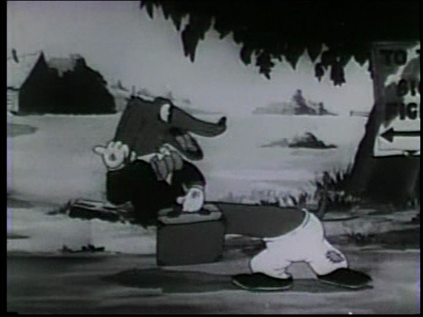
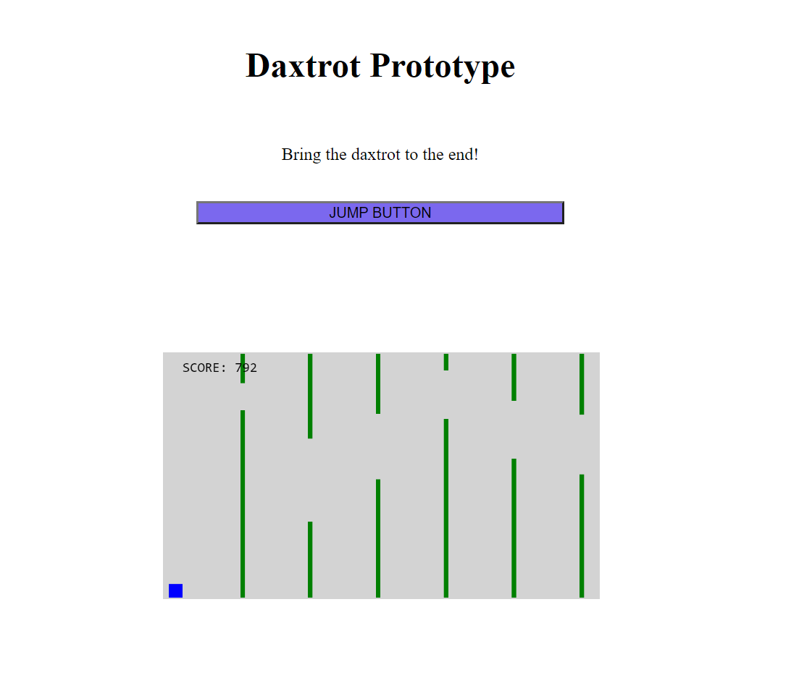
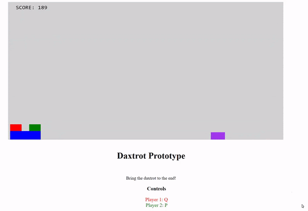
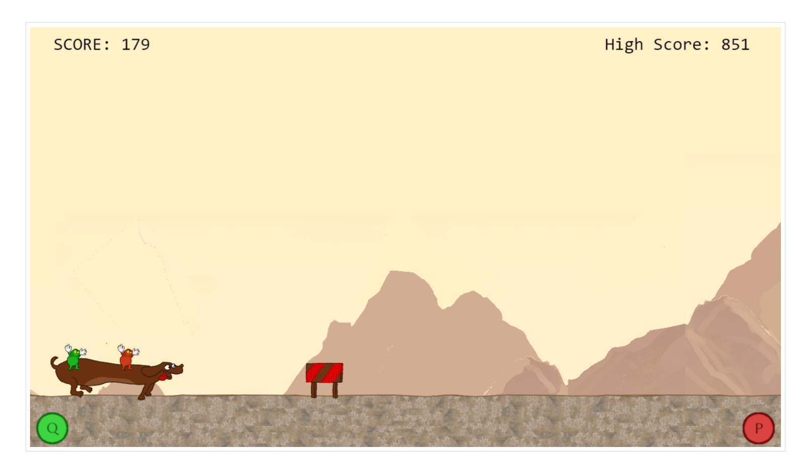
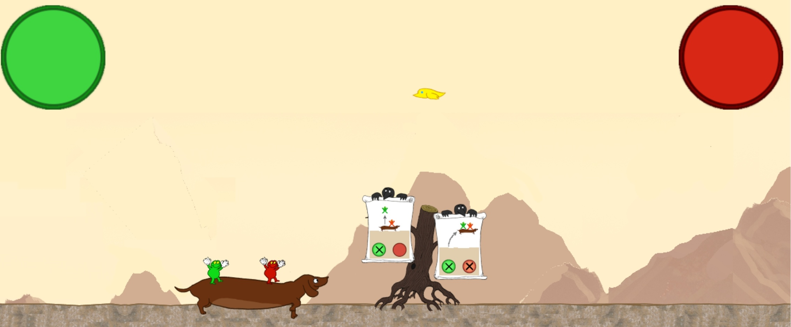

We based our work on a simple Flappy Bird-clone on
w3schools
that already had some of the mechanics we were looking for, and
started building on this.

We then placed the sprite on the ground, added two smaller shapes
on top of the big one, and put various hinders in the way.

Later we got original sprites (by Simen) for all the elements, and
the game started looking like we had imagined.

In the final process, we worked to get a proper level layout (as
opposed to a randomized endless runne), an option to configure the
controls, more obstacles, a main menu, support for mobile devices,
and a couple of tutorial crows.